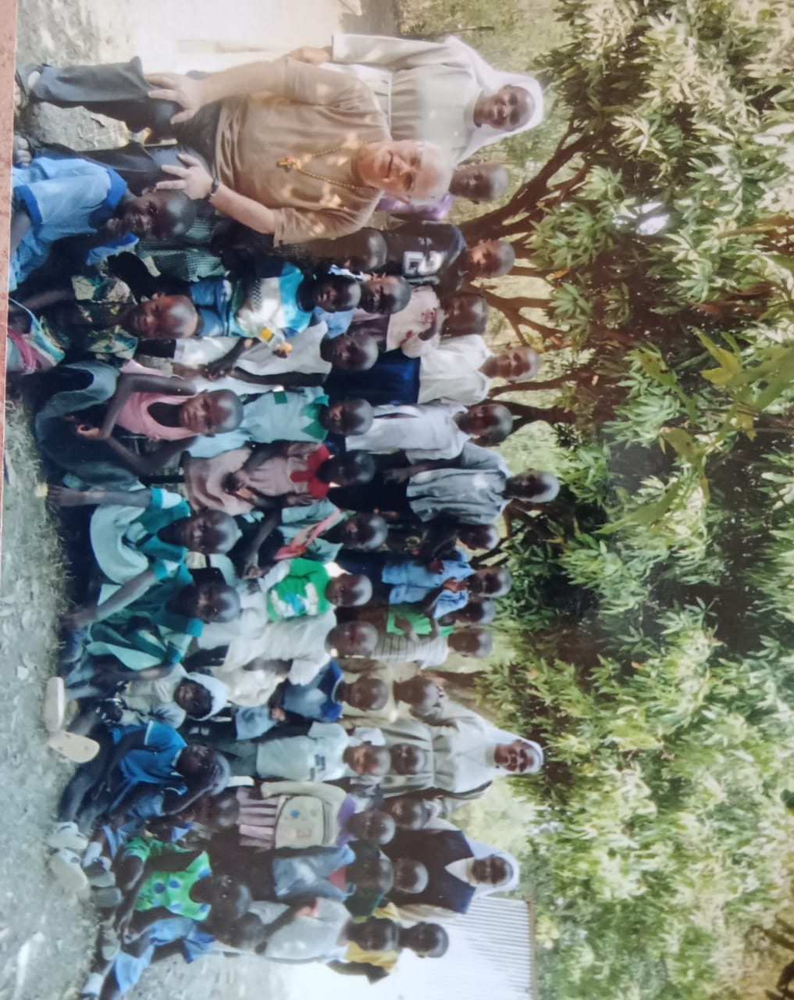

"History will judge us by the difference we make in the everyday lives of children."
Nelson Mandela
ACTIVITIES
1. School
The school is registered from ECD to class eight and currently it has a population of 200 pupils, from ECD to class four.
2. Orphans
The school takes care of orphans who are borders in that they stay and operate in the school compound.
3. Older Persons
The home has an intergrated program that takes care of older persons in the community by mentoring on table banking and other income geberating activities and providing foood and clothing from well wishers.
Our sponsors giving out some donations to our children
"The vocation to the apostolic ministry is not always accompanied by oneself felt and irresitable inclination
to such a sublime way of life,
but it requires a constant and generous willingness to sacrifice oneself
to God along with a suitability for the task for which one is presenting himself "
St Daniel Comboni
CORE VALUES
To aim at having an independent citizen. To mould children with appreciation and warmest regards.
To instill spritual practices that help children faith to grow.
To appreciate varieties of personalities within the home.
To encourage creativity in the children.
To ensure children rights, basic and secondary needs are upheld.
Fr. Grima addressing one of the children
"welcomes with gratitude those whom the Lord of the harvest calls to be Apostles and heralds of the Good news"
Rule of Life number 80
CHALLENGES
Very expensive and scarce teaching and learning materials.
Lack of enough teaching snd non teaching staff.
Experienced dynamic trends in the education sector e.g frequent curriculum change, financial assistance
to institutions reviews makes it uncertain in comprehensive planning for the future.
Experienced dynamic trends in the technological and innovation world, makes it expensive to keep abreast with
modern methods of service delivery.
High prevelance of HIV and AIDS among the people in the Community.
Inadequate Finances to fund development projects.
Inadequate infrastructures and facilities e.g classrooms, lockers, desks and office furnitures.
Poverty among parents.
Chronic Health status of some learners
No means of transport.
The notion that the schoolis rich leads people wanting to use existing facilities for free.
Health facility (Dispensary).
Here below are some of the pictures of our programs
Prayers of intercession
ongoing during mass
The institution of the tabenacle
His Grace panting tree with
one of our sponsor
The early days of
the project in 2015